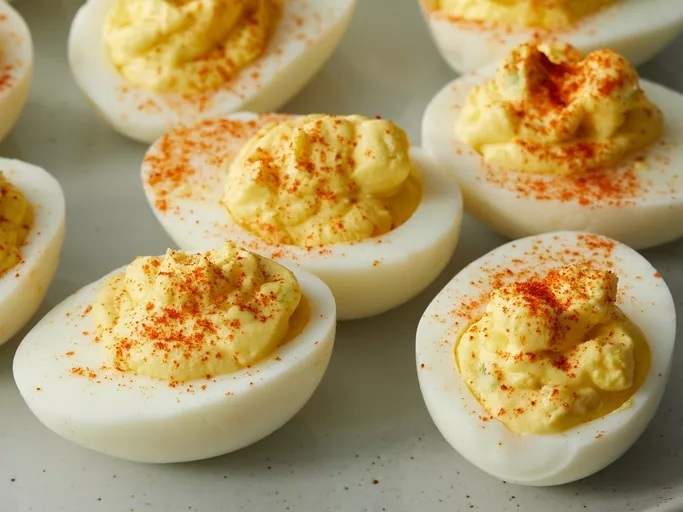

See other recipes
Deviled Eggs

Description
A classic, tasty egg dish that is great for potlucks and group meals.
Ingredients
- 6 hard-boiled eggs
- Mayonnaise
- 1 teaspoons sugar
- 1 teaspoon vinegar
- 1/2 teaspoon mustard
- Onion
- Celery
- Paprika
- Salt
Steps
- Cut the boiled eggs in half and remove the yolks. Reserve the whites.
- Mash the yolks with a fork and add the remaining ingredients.
- Stuff or pipe the filling into the egg white halves.